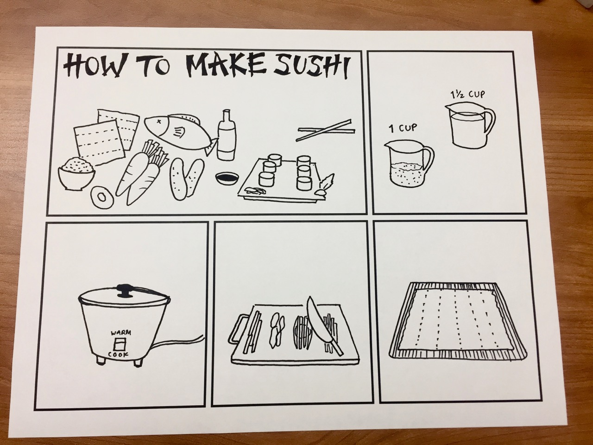
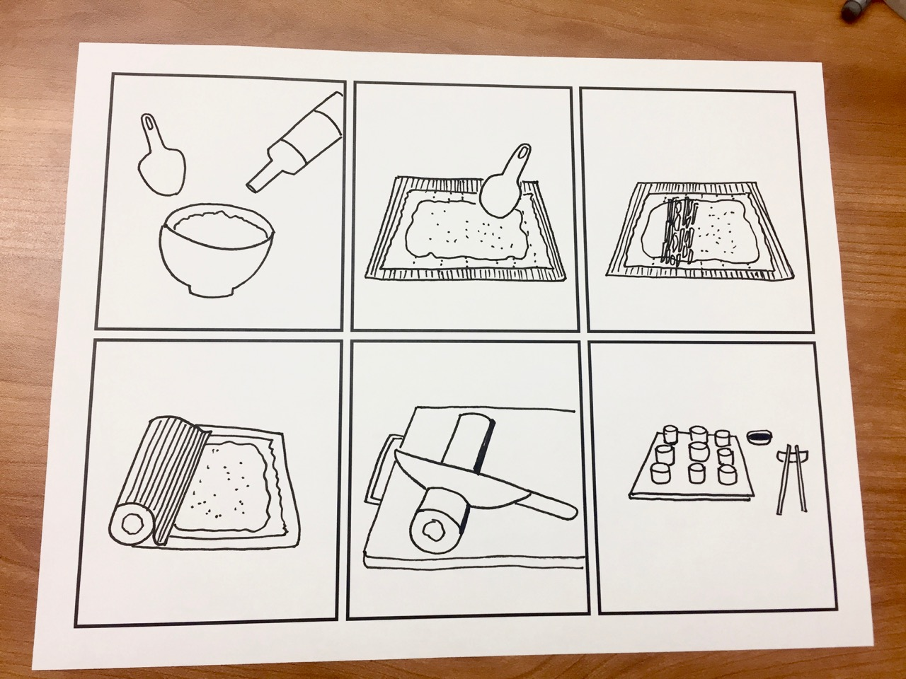
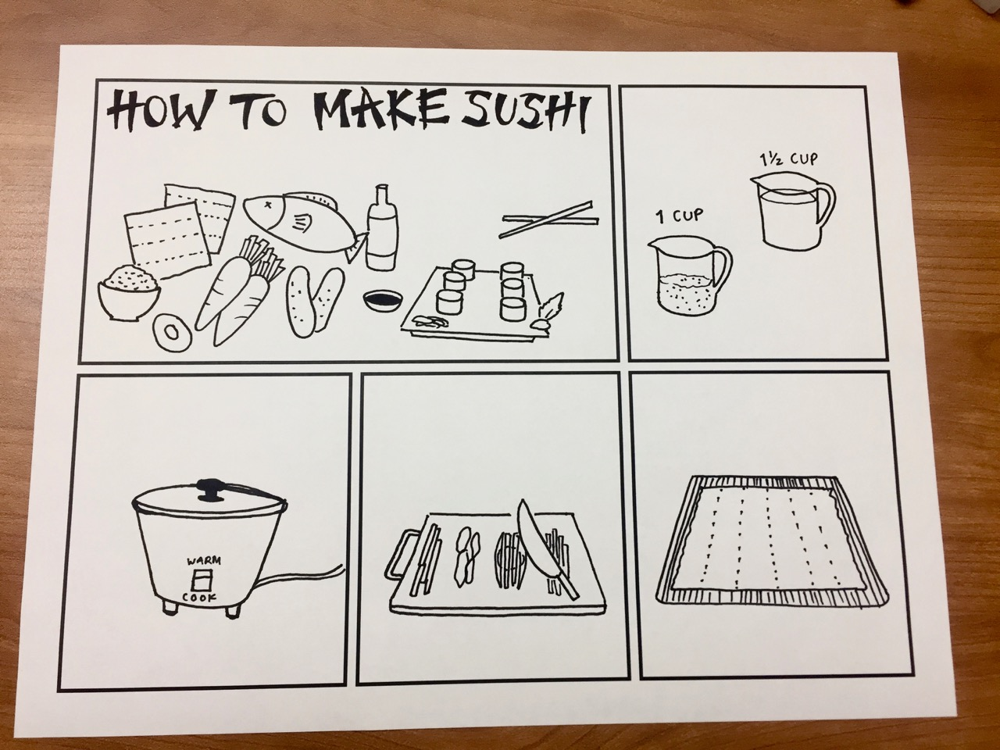
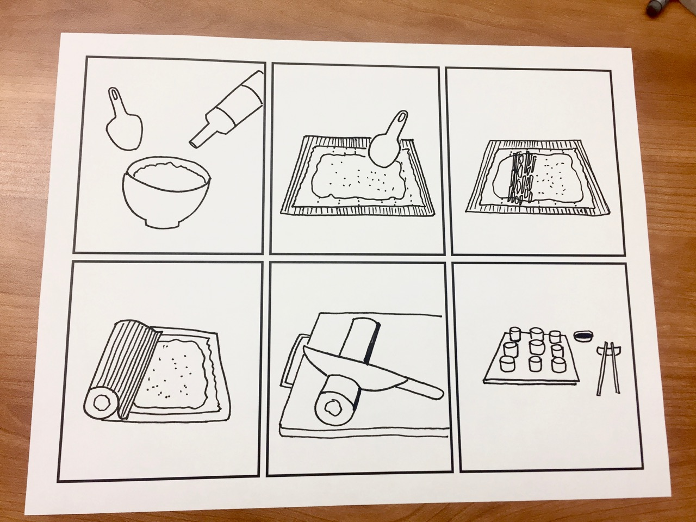

How to Make Sushi
Storyboarding
Assignment for my ID 2401: Visual Design Thinking class. I wanted to create a storyboard that could convey a sequence of steps without the use of words.
 Assignment for my ID 2401: Visual Design Thinking class. I wanted to create a storyboard that could convey a sequence of steps without the use of words.
 